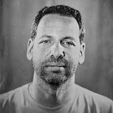
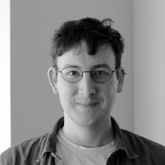
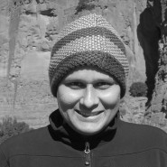
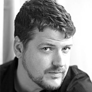
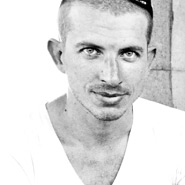
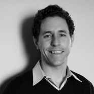
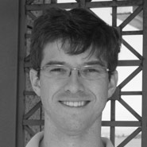
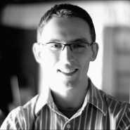
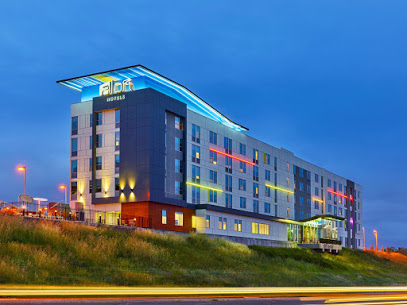

About the Event
The UCSC Extension’s annual conference and exhibit is designed to foster a close-knit relationship amongst artists at various universities around the world. But sign up early, as this not-to-miss conference sells out quickly, and the waiting list is long. In addition, technology students are encouraged to send in works from their school portfolios to be considered for hanging in the CAC exhibit halls, as well as to be selected as a Featured Artist.
Featured Artists
The UCSC Extension has assembled a fantastic roster of individuals who represent a broad spectrum of companies focused on the challenges Node.js addresses. Keep checking back as new speakers are announced and added to the page.
These individuals will share their insights and experience with a focus on real-world challenges and real-world solutions that leverage Node.js. The use of Node.js today is much broader than people realize, and after hearing from the speakers at Node Summit you will begin to have a sense for how significant the impact of Node.js already is, as well as the impact it will have in the future.
- 
- 
- 
- 
- 
- 
- 
- 

The Venue
Hotel Aloft
Set in Silicon Valley's tech orientated Santa Clara, this trendy hotel with modern styling is 2 miles from California's Great America theme park and 3 miles from technology exhibits of Intel Museum.
Colorful rooms offer free Wi-Fi, flat-screen TVs and desks, as well as minifridges, and tea and coffeemakers. Some sleep up to 4 people. Upgraded rooms feature iPads with voice-activated functions, including light and temperature control.
The hotel has a 24-hour cafe, and a hip bar with live music. There's also a lounge with a pool table. Other amenities include an outdoor pool and a 24/7 gym. Breakfast is available for a surcharge.